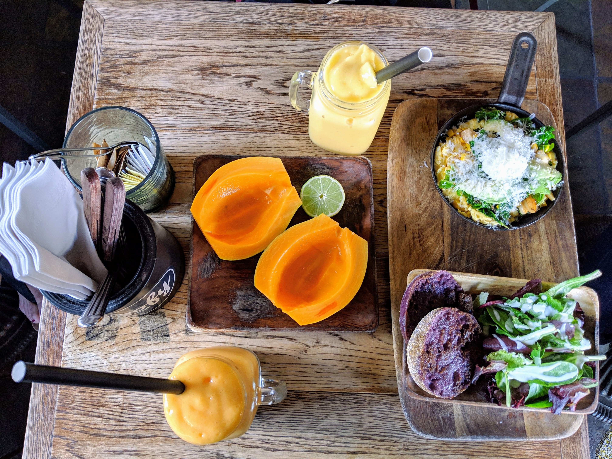

4 Major Hawaiian Islands
Island of Oahu
Oahu is a small island with a large population of over 900,000 people. This tiny island is filled with tourist opportunities for families such as the Pearl Harbor Memorial, Iolani Palace, Museums, Beaches, Ziplining and more. Despite all of these touristic opportunities, Oahu is considered one of the most remote cities in the world, with its nearest population being California (2,000 miles away). Oahu is filled with culture with its unique traditions and foods. Oahu is also assumed to be the land that founded the traditional ukulele we relate so fondly to Hawaii.
Hawaiian Ukulele Audio by bensound.com
Who is O'ahu Ideal For?
O'ahu is much easier to travel around than the other islands. Much of the traveling can be done through tour guides and services and the environment is much less rugged than the other islands. This island is ideal for:
- Those who enjoy the city characteristics such as night clubs, entertainment and shopping.
- Families with younger children.
- This island is much more well suited for those who have difficulty with high intensity activities. Much of the views are available without long hikes.
- Surfers or those interested in learning how to surf.
- People who enjoy learning about history and seeing artifacts.
